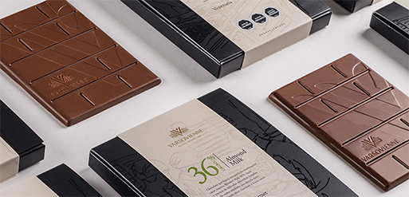

COMO SE CATA EL CHOCOLATE
La temperatura ideal para conservar el chocolate está entre 14º C y 18º C y una humedad del 57%, pero la temperatura óptima para catar el chocolate oscila entre los 19 y 25ºC por lo que en algunas ocasiones es necesario acondicionar el producto al menos una hora antes de llevar a cabo la degustación. Se debe tener cuidado a la hora de llevar productos fríos a temperatura ambiente de una sala para evitar su condensación y la formación de defectos.
En la cata se ha de disponer un material de enjuague que suele ser agua, para aumentar la sensibilización gustativa entre muestra y muestra y eliminar el aroma del chocolate, También se puede suavizar la boca con un trozo de manzana o de pan.
La técnica de cata, consiste en dejar que se asiente el producto en la boca durante unos instantes, para que el chocolate se funda con la temperatura de la boca y así se puedan liberar los compuestos volátiles (aroma) y los compuestos solubles (sabor).
Se deja unos instantes en contacto con la parte superior del paladar para poder apreciar todos sus matices de textura y persistencia.
SECUENCIA DE CATA DEL CHOCOLATE
La degustación se realiza en diversas fases relacionadas con el orden normal de
percepción:
1.-Fase visual
Es una fase esencial a la hora de evaluar la calidad del producto. Los caracteres
percibidos son: Color, Superficie, Ausencia de defectos.
2.-Fase olfativa Olores directos
Son los estímulos de las sustancias volátiles que, de diverso origen y naturaleza,
forman parte de la propia composición del chocolate.
Por lo tanto, es el conjunto de olores principales y secundarios que se perciben por vía
nasal directa.
3.-Fase táctil y auditiva
Tacto:Comprobamos la ductilidad del chocolate presionándolo con los dedos pulgar e
índice para apreciar su capacidad de modelarse con el calor corporal.
El tacto debe ser firme, nunca pegajoso y al partirlo, debe ofrecer una resistencia
mínima. Si al partirlo forma astillas, está demasiado seco y si es
difícil de partir puede estar muy ceroso. Seguidamente introducimos un trozo en la boca
y lo trituramos con los dientes donde debe apreciarse también el
sonido crujiente y las características de textura (si es fundente, untuoso, fluido,
pegajoso, etc.).
Sonido: Al romper la tableta, se espera que el sonido sea crujiente, duro pero
quebradizo y con un “clac” característico al ser partido en dos. Eso
significa que la manteca de cacao tiene una buena estructura cristalina.
4.-Fase gustativa
Una vez el chocolate ha sido triturado en la boca, lo presionamos suavemente entre la
lengua y el paladar para que coja rápidamente temperatura y empiece a
fundirse. Lo repartimos por toda la boca para alcanzar las distintas zonas de papilas
gustativas y poder examinar todas sus características. Encontramos así
los sabores propios del cacao, dulzor, acidez y amargor.
Los chocolates finos tienen un largo final y pueden tener aromas con diferentes notas
frutales, aromas florales, balsámicos, a té verde, frutos secos, etc.
En su conjunto el aroma puede ser delicado, simple, complejo o equilibrado.
Defectos en el sabor o regusto final, alguno de ellos puede ser aromas o regustos
mohosos, a quemado (por una alta contaminación por humo de madera durante el
almacenamiento y secado), una alta acidez (debido fundamentalmente a un alto desarrollo
durante la fermentación, lo cual inhibe el desarrollo del flavor a chocolate),
aromas extraños que se absorben durante el transporte y almacenamiento etc.